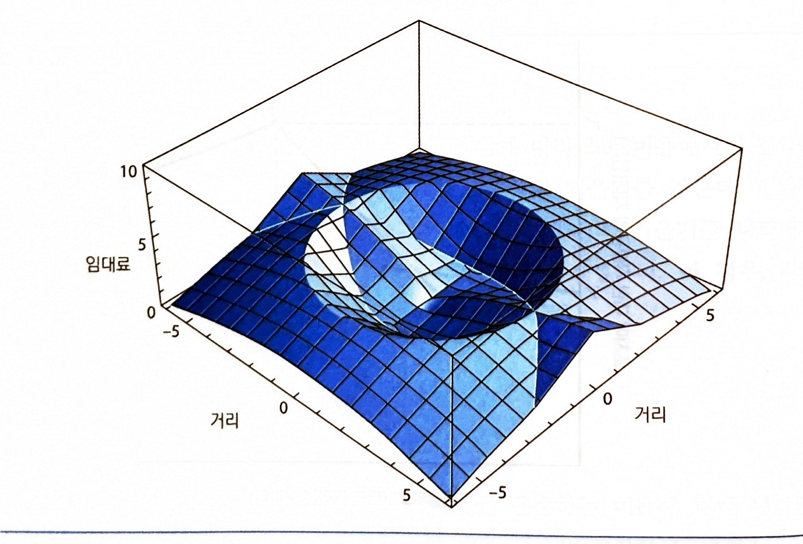

9강. 토지 임대료와
공장용 토지
“토지에 있어서의 고민거리는 그들이 더 이상 이것을 만들지 않는다는 것이다.” — 윌 로저스
고정된 공급의 토지에 대한 경쟁은 토지가 잔여재산분배청구권자임을 의미한다
토지 임대료는 기업의 총 수입에서 생산의 비토지 비용을 뺀 것과 동일하다. 지주는 기업이 다른 생산요소들에 대해 모두 지불한 이후에 남은 것을 얻는다. 농업용 토지의 가격은 비옥도를, 제조업용 토지의 가격은 접근성을 반영한다
01 비옥도와 잉여의 원칙
농업용 토지의 가격은 무엇이 정하는가 · 교재 p.195~200
잉여의 원칙 (the leftover principle)
데이비드 리카르도(1821)는 농업용 토지의 가격이 이의 비옥도에 의해 결정된다는 아이디어에 기여하였다. 토지 비옥도의 증가는 생산비용을 감소시키며, 따라서 농부는 이 토지에서 작물을 재배하기 위해 보다 많이 지불할 용의를 지닌다
비옥한 토지에 대한 농부들 간 경쟁적인 입찰은 승리하는 입찰자가 영(0)의 경제적 이윤을 갖는 수준으로 토지의 가격을 상승시킨다
→ 승리하는 입찰자에 의해 지불되는 임대료는 총 수입에서 비토지 비용을 뺀 것과 동일하다. 지주는 농부가 다른 생산요소들에 대해 지불한 후에 남는 돈을 얻는다
토지 임대료, 시장가치, 그리고 토지의 가격
토지 임대료 land rent
대지를 이용할 권리에 대한 연간 지불액. 농부는 옥수수 재배를 위한 1헥타르의 토지를 이용하기 위해 지주에게 연간 300달러를 지불할 수 있다
시장가치 market value
토지 소유를 위한 구입가격. 옥수수 재배에 적합한 토지의 시장가치는 1헥타르당 6,000달러가 될 수 있다
토지는 소득의 흐름을 낳는 자산이며, 투자자가 지불하고자 하는 최대치는 소득 흐름의 현재가치와 동일하다. 시장 이자율 i = 5%라면
$PV = R/i = \$300 / 0.05 = \$6{,}000$
이 현재가치는 은행 계좌에 예치하는 것 대신에 토지에 투자하는 것의 기회비용을 반영한 것이다
→ 이 책에서 토지의 가격은 토지 임대료와 동의어다. 연간 임대료를 이자율로 나누면 시장가치가, 시장가치에 이자율을 곱하면 암묵적 가격(연간 임대료)이 된다
농업용 토지 임대료 모형의 다섯 가정
임차 농부들이 다양한 비옥도의 토지에 옥수수를 재배하는 지역을 고려하라
- 생산물 시장에서의 완전한 경쟁 — 농부들은 가격수용자들이고, 경제적 이윤은 장기적으로 영(0)이다
- 공통의 생산요소 가격들 — 비토지 생산요소들(재료·노동·자본)의 가격은 지역 전체에 걸쳐 동일하다
- 가장 높은 입찰자에게 토지를 임대 — 지주는 가장 높은 입찰자에게 토지를 임대한다
- 영(0)의 운송비용 — 운송비용은 영(0)이다
- 국가수준에서의 가격들 — 모든 가격들은 국가 시장에서 결정되고 지역에서의 사건들에 영향을 받지 않는다
비옥도가 지불용의를 정한다
한계비용곡선은 평균 총 비용곡선을 최저점에서 관통한다. 비용곡선은 재료·자본·노동·농부의 기회비용을 포함한 모든 비토지 비용을 담는다
농부는 가격 = 한계비용인 생산량에서 이윤을 극대화하고, 음영 사각형이 이윤 사각형이다
경쟁이 지불용의를 임대료로 바꾼다
잉여의 원칙: 균형 토지 임대료는 총 수입에서 비토지 비용을 뺀 것과 동일하다
경쟁이 강요한다
개별 농부는 높은−비옥도 토지에 대해 500달러까지 지불할 용의가 있고 경쟁에 의해 그렇게 하도록 강요된다. 500달러보다 적은 임대료에서 지주는 조금 더 지불할 용의가 있는 또 다른 농부를 찾을 수 있다
→ 균형 임대료가 경제적 이윤을 영(0)으로 만들기 때문에 농부들은 상이한 농지들 간에 무차별하다. 높은−비옥도 토지의 생산비용 절약은 보다 높은 토지비용에 의해 정확히 상쇄된다
시장진입에 제약이 있으면 적용되지 않는다
진(Gene)이 생산비용을 200달러만큼 줄이는 농업기술에 특허를 가지고 있다고 하자. 지주는 700달러를 받을 것으로 예상할 수 없는데 그 금액을 지불하고자 하는 경쟁하는 농부들이 없기 때문이다
진은 단지 500달러를 지불하고 200달러의 경제적 이윤을 얻는다. 특허에 기인한 이러한 잉여는 경제적 임대료(economic rent)로 알려진다. 특허가 만료되고 모든 농부가 같은 기술에 접근하면 지주는 임대료를 700달러로 올려 이를 토지 임대료로 전환할 수 있다
02 제조업: 토지가격과 입지
도시환경에서는 비옥도가 아니라 접근성이다 · 교재 p.200~207
자전거 제조업체의 단순 모형
도시환경에서 한 구획의 토지에 대한 지불용의는 비옥도보다는 접근성에 의존한다. 토지는 가장 높은 입찰자에게 할당되며, 따라서 제조업체의 토지 입찰이 어디에 입지하는가를 결정한다
- 고정된 생산요소와 생산물 수량 — 개별 기업은 1헥타르의 토지를 포함하여 고정된 양의 생산요소로 고정된 양의 자전거를 생산한다
- 고정된 생산요소와 생산물의 가격 — 자전거의 가격도 중간재 생산요소의 가격도 고정되어 있다
- 중심부의 운송터미널 — 수입과 수출은 중심부의 화물터미널(기차터미널 혹은 항구)을 거친다
- 도시 내 운송 — 마차를 이용한다. 1킬로미터당 운송비용은 f = 10달러
- 노동비용 — 임금은 통근비용을 보상한다. 중심부에서 가장 높고, 1킬로미터 이동은 노동비용을 c = 4달러만큼 감소시킨다
마차 도시에서의 제조업 임대료
총 비용은 중심부에서 50달러이고 5킬로미터에서 80달러다. 거리 1단위 증가는 운송비용을 10달러 늘리고 노동비용을 4달러 줄여 6달러의 순 증가를 가져온다
→ 입찰액은 총 수입에서 총 비용을 뺀 것이다. 중심부에서 42달러 = 92 − 50이고 1km당 6달러씩 줄어 1km에서 36달러, 5km에서 12달러가 된다
지대곡선의 기울기는 f 와 c 가 정한다
$r(x) = \dfrac{\text{총 수입} - \text{운송비용}(x) - \text{노동비용}(x) - \text{중간재 생산요소 비용}}{T}$
r(x)는 단위 토지당 입찰액, T는 이 기업이 점유한 토지의 양(부지 면적)이다
$\dfrac{\Delta r}{\Delta x} = \dfrac{-f + c}{T} = \dfrac{-10 + 4}{1} = -6\text{달러}$
이 단순한 모형은 20세기 초의 운송기술을 반영한다. 트럭은 아직 개발되지 않아 도시 내 운송은 마차에 의해 이뤄져 느리고 비쌌다. 도시 간 운송은 선박·기차로 이뤄져 제조업체들은 중심부의 항구나 철도터미널 근처에 입지하려 했다. 대조적으로 노동자들은 교외 주거지역에서 빠른 시내 전차로 통근하였다
→ f > c이기 때문에 제조업 지대곡선은 음(−)의 기울기를 가지며, 제조업체들은 중심부 운송터미널에 가까운 부지를 다른 토지 이용자보다 높은 가격으로 입찰해 획득하였다
트럭이 기울기를 뒤집는다
1910년에 개발된 도시 내 트럭은 마차보다 두 배만큼 빠르고 운행하는 데 덜 비쌌다. 1910년과 1920년 사이 시카고에서 트럭의 수는 800에서 23,000으로 증가하였다. 단위 운송비용 f 가 10달러에서 1달러로 감소한다고 하자
→ 이제 Δr/Δx = (−1 + 4)/1 = +3달러. 생산요소와 생산물을 운송하는 비용이 노동자를 운송하는 비용보다 낮으면 기업은 운송터미널에서 먼 토지에 더 많이 입찰하고 교외의 노동력에 가까워진다
순환고속도로 도시
도시 간 트럭과 고속도로체계의 결합은 제조업체들로 하여금 중심부 항구나 철도터미널에 대한 의존성으로부터 자유롭게 하였다. 지불용의 지대곡선은 고속도로에서 절정에 달한다
기업이 고속도로를 향해 이동함에 따라 운송비용과 노동비용이 모두 감소하므로 입찰액은 증가한다. x″의 고속도로를 넘어서면 중심부와 고속도로로부터 멀어지는 이동은 운송비용을 증가시키고 노동비용을 감소시킨다
→ 두 입지에서 운송비용은 영(0)이다. 차이는 노동비용이다 — 중심부 입지는 더 긴 통근거리를 보상할 높은 임금을 요구해 노동비용이 높고, 따라서 입찰액이 낮다 (r′ < r″). 잉여의 원칙과 부합한다
순환도로 도시에서의 토지 임대료 표면
항구나 중심부 철도터미널이 존재하지 않으며, 제조업체들은 중간재를 수입하고 생산물을 수출하기 위해 고속도로에 의존한다. 도시 간 고속도로는 도시 중심부를 지나고 우회 고속도로는 도시 간 고속도로에 연결된다

오설리반, 『오설리반의 도시경제학』 제9판, 박영사, 2022, 그림 10−6 (p.206)
→ 토지에 대한 입찰가격은 순환도로에서 최고에 도달한다. 여기서 운송비용은 영(0)이고 노동비용은 중심부에 보다 가까운 고속도로 입지에서보다 낮다. 순환도로를 넘어서면 노동비용이 상대적으로 낮은 비율로 감소하므로 입찰가격은 운송비용이 증가함에 따라 감소한다
제조업 임대료와 제조업의 공간적 분포
교재 그림 10−7은 2015년 덴버에서 제조업의 공간적 분포를 보여준다. 인구조사표준지역을 퍼즐조각으로 그리고 제조업 고용밀도만큼 밀어 올린 지도다. 제조업 밀도는 인구조사표준지역에서 1헥타르당 제조업 노동자수와 같다. 1헥타르는 100평방미터로 풋볼 경기장의 대략 두 배에 해당한다
지도에서 리본모양은 대도시지역을 지나는 고속도로를 나타낸다
→ 다수의 큰 대도시지역들에서와 같이, 거대한 제조업 고용은 고속도로에 접근 가능한 지역에 존재한다. 대부분의 기업들이 도시 간 고속도로체계에 연결된 고속도로 가까이에 입지하므로 도시 제조업 고용은 분산적이고 널리 퍼진다
Q & A
권규상 Kyusang Kwon
(kyusang.kwon@chungbuk.ac.kr)